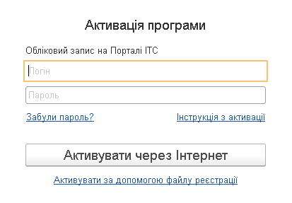

Автоматична активація (за наявності доступу до Інтернету)
Активація за допомогою файлу реєстрації
Якщо ваш комп'ютер підключено до Інтернету і у вас є обліковий запис на Порталі ІТС, то краще використовувати цей спосіб.
У діалозі «Активація програми» вкажіть логін та пароль для вашого облікового запису на Порталі ІТС (https://portal.bas-soft.eu/) та натисніть «Активувати через Інтернет».

Програма підключиться до порталу та отримає список поставок програми, які зареєстровані в особистому кабінеті ІТС. Якщо зареєстрована лише одна поставка, то для неї одразу буде показано вікно активації.
Якщо дані реєстрації є правильними, натисніть «Почати роботу». Інформаційна база буде активована для обліку обраної організацією або підприємцем.
Якщо на попередньому кроці вказано неправильний обліковий запис, то за посиланням «Вибрати інший обліковий запис» можна повернутися до діалогу введення логіна або пароля.
Якщо для облікового запису зареєстровано кілька поставок, то буде показано діалог вибору однієї з них для активації.

Потрібно вибрати одну із зазначених поставок та натиснути кнопку «Вибрати». Після цього потрібно перевірити дані реєстрації та можна розпочинати роботу.

Якщо доступу до Інтернету немає, можна активувати програму за допомогою файлу активації. Файл активації можна завантажити в розділі «Програмні продукти» Порталу ІТС.

Для активації потрібно натиснути кнопку «Вибрати файл реєстрації» та вказати файл, який ви завантажили з Порталу ІТС. Файлом реєстрації є zip-архів з реєстраційними даними. Після вибору файлу реєстрації буде відображено реєстраційну інформацію, яка міститься у файлі.

Якщо реєстраційні дані є правильними, натисніть кнопку «Почати роботу». Після цього програма буде активована для обліку обраної організацією або підприємцем.
Якщо вибрано файл із даними реєстрації іншої організації, то можна натиснути гіперпосилання «Вибрати інший файл реєстрації» і повернутися до діалогу вибору файлу.